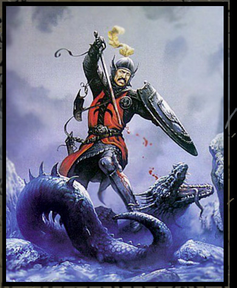
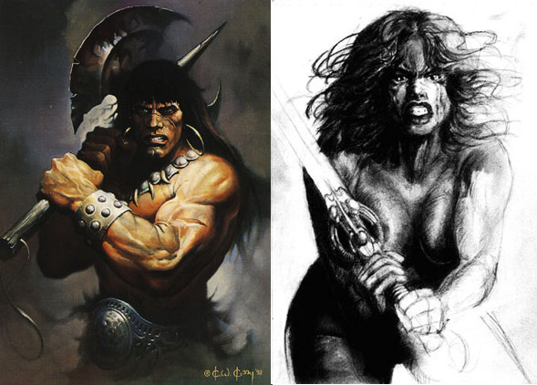
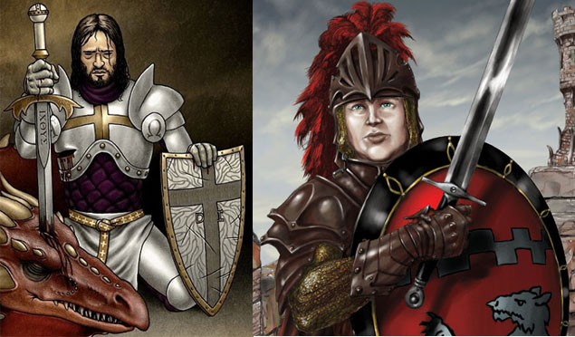
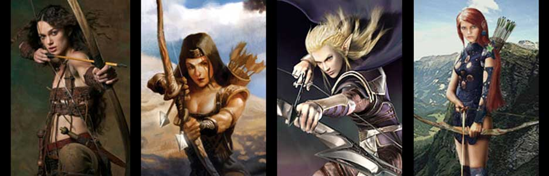
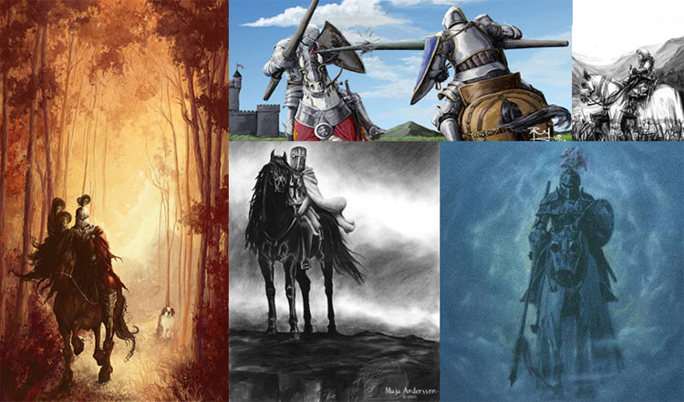
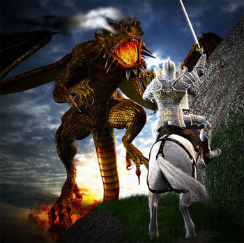
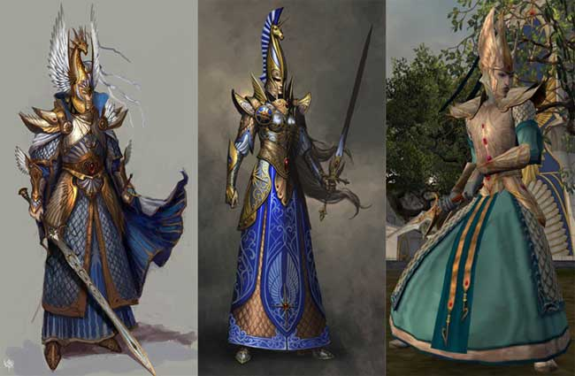

Le seguenti regole sono state ideate per rendere più versatile, differenziata e divertente la classe dei combattenti (fighter) attraverso l'inserimento di una serie di talenti speciali a cui hanno accesso, unicamente alla loro creazione, i personaggi. Ciò può avvenire con due diverse modalità:
a) Scelta di un talento speciale
Alla fine della creazione di un personaggio che appartenga alla classe warrior si può decidere di utilizzare 4 punti creazione (sempre che ne siano rimasti) per ottenere un talento speciale (un solo talento può essere acquisito in questo modo). Il giocatore quindi potrà scegliere la sottoclasse dalla quale poi si selezionerà a sorte (con il tiro di 1d20) il talento che costui avrà acquisito.
b) Appartenenza ad una sottoclasse di combattenti
In alternativa, solo i personaggi della classe fighter, potranno decidere di appartenere ad una delle seguenti sottoclassi di combattenti (sempre che ne abbia i requisiti minimi) ottenendo tutti i benefici e le limitazioni previste dalla stessa. Gli appartenenti a tali sottoclassi saranno considerati comunque della classe fighter, seguiranno però una diversa, specifica tabella dei punti esperienza.
LE SOTTOCLASSI DEI COMBATTENTI

Requisiti di abilità: Intelligenza 12, Destrezza 15
Libertà di Movimento e Limite alla Specializzazione
Il Weapon Master deve mantenere in combattimento una certa libertà di movimento, per tale motivo costui non può indossare alcun tipo di corazza metallica rigida pesante (piastre da guerra e piastre completa). Inoltre, la sua versatilità nell'uso di diversi tipi di armi si traduce in una minore possibilità di specializzazione. Il Weapon Master, infatti, paga il 133% dei punti necessari a raggiungere il grado di conoscenza nell'uso delle armi di Maestro e non può, in alcun caso, raggiungere il grado di Gran Maestro.
Talenti
Speciali
(1-5)
Attitudine Naturale all'Uso delle Armi
Il Weapon Master può selezionare in fase di creazione un'arma da cinque diverse categorie di armi esistente in cui acquisire automaticamente il grado di abile. Occorre osservare che per categorie di armi si intendono le varie categorie indicate nelle regole per le armi (ad es. armi da tiro, spade, asce, ecc...) [link]. Il Weapon Master, inoltre, è estremamente portato ad aumentare la propria conoscenza nell'uso di diverse armi. Per tale motivo il Weapon Master paga solo il 33% dei punti necessari (arrotondati per eccesso) a divenire abile in una qualsiasi altra arma. Infine, per ogni arma ulteriore rispetto a quelle di partenza in cui il Weapon Master acquisisce il grado di abile, ad esclusione delle armi affini o gemelle a quelle già in cui il Weapon Master già possiede un qualsiasi grado di conoscenza, il Weapon Master ottiene 3 punti combattimento bonus supplementari.
(6-10)
Facilità di Apprendimento
Il Weapon Master raggiunge con maggiore facilità alcuni gradi di conoscenza nell'uso delle varie armi. Costui, infatti, necessita solo del 50% dei punti necessari (arrotondati per eccesso) ad acquisire il grado di esperto ed il 75% dei punti necessari (arrotondati per eccesso) a divenire campione nelle varie armi. Inoltre, data la sua abilità nel cambiare armi nel corso del combattimento, il Weapon Master paga solo il 50% dei punti necessari (arrotondati per eccesso) ad acquisire la competenza Rapid Arming (si noti che questo beneficio non si estende agli slots supplementari eventualmente acquisiti dal personaggio nella medesima competenza). Infine, il Weapon Master ottiene punti combattimento bonus pieni per tutti i gradi di conoscenza acquisiti nelle varie armi ad eccezione dei gradi posseduti nelle armi affini o gemelle. In pratica, tutte le armi conosciute dal Weapon Master saranno considerate come armi primarie (fatta eccezione per le armi nelle quali il Weapon Master possiede gradi di conoscenza in quanto armi affini o gemelle).
(11-15) Catena di Attacchi
Il Weapon Master conosce una tecnica di combattimento unica. La sua bravura nell'uso delle armi raggiunge l'apice quando costui cambia le armi utilizzate nel corso di un combattimento. In particolare, quando il Weapon Master combatte contro una creatura lo stesso riceve un bonus cumulativo di +1 al tiro per colpire e di +1 ai danni (che si considerano danni dovuti alla forza del combattente) in ogni round nel quale attacca il medesimo avversario con un'arma appartenente ad una categoria diversa da quelle usate per attaccarlo nei rounds immediatamente precedenti. Con questa tecnica il Weapon Master può raggiungere un massimo bonus di +4 al tiro per colpire e +4 ai danni effettuando una catena di attacchi dalla durata massima di cinque rounds di combattimento contro il medesimo avversario utilizzando cinque armi appartenenti tutte ad una diversa categoria. Se il Weapon Master attacca un diverso avversario, se utilizza un'arma della medesima categoria di quella utilizzata nei rounds precedenti, se interrompe i propri attacchi anche per un solo round, oppure se ha raggiunto, durante il round precedente, il massimo bonus concessogli, la catena di attacchi terminerà e lo stesso dovrà iniziarne, quindi, una nuova. Si noti che non ha alcuna rilevanza l'ordine delle armi con il quale il Weapon Master effettua ogni catena di attacchi ben potendo costui, ad esempio, terminare una catena di attacchi con un'arma ed iniziare la successiva catena di attacchi con la medesima arma. Occorre osservare che per categorie di armi si intendono le varie categorie indicate nelle regole per le armi (ad es. armi da tiro, spade, asce, ecc...) [link].
(16-20)
Capacità Speciali di Combattimento
Il
Weapon Master ottiene alcune capacità speciali di combattimento quando costui
raggiunge il grado di
Maestro in almeno due, tre, quattro o cinque armi
appartenenti
tutte
ad una categoria diversa
l'una dall'altra. Una
volta ottenute tali abilità il Weapon Master potrà utilizzarle liberamente con
qualsiasi arma nella quale abbia raggiunto il grado di Maestro.
Occorre osservare che per categorie di armi si intendono le varie categorie indicate nelle regole per le
armi (ad es. armi da tiro, spade, asce, ecc...) [link]. Le
capacità speciali di combattimento ottenute in questo modo dal Weapon Master
sono le seguenti (nello schema sono riportate interamente tutte le capacità
possedute dal Weapon Master a seconda del numero di armi in cui costui è
divenuto Maestro, senza che sia necessario quindi effettuare alcun cumulo di
capacità):
Maestro in due armi:
- Quando, nel corso di un round di combattimento, il Weapon Master utilizza
punti combattimento, costui può provare a
risparmiare fino ad 1 punto combattimento ogni 6 punti
effettivamente utilizzati nel corso dell'intero round (dopo cioè che è stata
effettuata ogni altra riduzione, come ad esempio quella dovuta alla competenza
Combat Tactics). In pratica costui può provare a risparmiare 1 punto in caso
abbia utilizzato da 6 a 11 punti combattimento; fino a 2 punti in caso abbia
utilizzato da 12 a 17 punti combattimento; fino a 3 punti in caso abbia
utilizzato da 18 a 23 punti combattimento; e così via... Per risparmiare tale
punti il Weapon Master dovrà superare alla fine del round una
prova di intelligenza con una
penalità cumulativa di -1 per ogni punto combattimento che otterrà superando
tale prova.
- Quando, durante un combattimento, il Weapon Master effettua un
tiro per l'iniziativa pari ad 1
costui potrà effettuare, unicamente contro uno degli avversari che stava
attaccando, un attacco extra
alla fine del round in corso.
Maestro in tre armi:
- Quando, nel corso di un round di combattimento, il Weapon Master utilizza
punti combattimento, costui può provare a
risparmiare fino ad 1 punto combattimento ogni 5 punti
effettivamente utilizzati nel corso dell'intero round (dopo cioè che è stata
effettuata ogni altra riduzione, come ad esempio quella dovuta alla competenza
Combat Tactics). In pratica costui può provare a risparmiare 1 punto in caso
abbia utilizzato da 5 a 9 punti combattimento; fino a 2 punti in caso abbia
utilizzato da 10 a 14 punti combattimento; fino a 3 punti in caso abbia
utilizzato da 15 a 19 punti combattimento; e così via... Per risparmiare tale
punti il Weapon Master dovrà superare alla fine del round una
prova di intelligenza con una
penalità cumulativa di -1 per ogni punto combattimento che otterrà superando
tale prova.
- Quando, durante un combattimento, il Weapon Master effettua un
tiro per l'iniziativa pari od inferiore a 2
costui potrà effettuare, unicamente contro uno degli avversari che stava
attaccando, un attacco extra
alla fine del round in corso.
- Una volta
al giorno, quando effettua un'azione di attacco con le armi, il Weapon
Master può decidere di tirare due volte (prima di
vedere i risultati) il dado di un suo tiro per
l'iniziativa e poi scegliere uno dei due risultati ottenuti.
Maestro in quattro armi:
- Quando, nel corso di un round di combattimento, il Weapon Master utilizza
punti combattimento, costui può provare a
risparmiare fino ad 1 punto combattimento ogni 4 punti
effettivamente utilizzati nel corso dell'intero round (dopo cioè che è stata
effettuata ogni altra riduzione, come ad esempio quella dovuta alla competenza
Combat Tactics). In pratica costui può provare a risparmiare 1 punto in caso
abbia utilizzato da 4 a 7 punti combattimento; fino a 2 punti in caso abbia
utilizzato da 8 a 11 punti combattimento; fino a 3 punti in caso abbia
utilizzato da 12 a 15 punti combattimento; e così via... Per risparmiare tale
punti il Weapon Master dovrà superare alla fine del round una
prova di intelligenza con una
penalità cumulativa di -1 per ogni punto combattimento che otterrà superando
tale prova.
- Quando, durante un combattimento, il Weapon Master effettua un
tiro per l'iniziativa pari od inferiore a 3
costui potrà effettuare, unicamente contro uno degli avversari che stava
attaccando, un attacco extra
alla fine del round in corso.
- Una volta
al giorno, quando effettua un'azione di attacco con le armi, il Weapon
Master può decidere di tirare due volte (prima di
vedere i risultati) il dado di un suo tiro per
l'iniziativa e poi scegliere uno dei due risultati ottenuti.
-
Una volta al giorno, quando effettua un'azione di
attacco con le armi, il Weapon Master può decidere di
tirare due volte (prima di vedere i risultati) il dado di un suo
tiro per determinare le ferite provocate da un suo
attacco e poi scegliere uno dei due risultati ottenuti.
Maestro in cinque armi:
- Quando, nel corso di un round di combattimento, il Weapon Master utilizza
punti combattimento, costui può provare a
risparmiare fino ad 1 punto combattimento ogni 3 punti
effettivamente utilizzati nel corso dell'intero round (dopo cioè che è stata
effettuata ogni altra riduzione, come ad esempio quella dovuta alla competenza
Combat Tactics). In pratica costui può provare a risparmiare 1 punto in caso
abbia utilizzato da 3 a 5 punti combattimento; fino a 2 punti in caso abbia
utilizzato da 6 a 8 punti combattimento; fino a 3 punti in caso abbia utilizzato
da 9 a 11 punti combattimento; e così via... Per risparmiare tale punti il
Weapon Master dovrà superare alla fine del round una
prova di intelligenza con una
penalità cumulativa di -1 per ogni punto combattimento che otterrà superando
tale prova.
- Quando, durante un combattimento, il Weapon Master effettua un
tiro per l'iniziativa pari od inferiore a 4
costui potrà effettuare, unicamente contro uno degli avversari che stava
attaccando, un attacco extra
alla fine del round in corso.
- Una volta
al giorno, quando effettua un'azione di attacco con le armi, il Weapon
Master può decidere di tirare due volte (prima di
vedere i risultati) il dado di un suo tiro per
l'iniziativa e poi scegliere uno dei due risultati ottenuti.
-
Una volta al giorno, quando effettua un'azione di
attacco con le armi, il Weapon Master può decidere di
tirare due volte (prima di vedere i risultati) il dado di un suo
tiro per determinare le ferite provocate da un suo
attacco e poi scegliere uno dei due risultati ottenuti.
-
Una volta al giorno, quando effettua un'azione di
attacco con le armi, il Weapon Master può decidere di
tirare due volte (prima di vedere i risultati) il dado di un suo
tiro per colpire e poi scegliere uno dei due
risultati ottenuti.

Requisiti di abilità: Forza 16
Combattimento Scoperto
Il berserker è un combattente furioso che cerca sempre di combattere in corpo a corpo con i propri nemici producendo il massimo danno possibile. Per questo motivo non può utilizzare in alcun caso scudi ed armi da tiro in combattimento (costui può, però, utilizzare armi da lancio). Inoltre costui deve mantenere in combattimento una certa libertà di movimento, per tale motivo costui può indossare esclusivamente corazze di tessuti e corazze metalliche snodate.
Talenti
Speciali
(1-5)
Combattimento
Sanguinario
Il berserker ottiene
gratuitamente l’arte di combattimento
"Furia in Battaglia" e paga solo il 50% dei punti necessari per imparare i
vari gradi dell’arte di combattimento "Combattimento
Letale". Inoltre, quando il berseker ha una piena libertà di movimento
in combattimento, ossia quando indossa al massimo una
corazza di tessuti, lo stesso
qualora, durante un combattimento, effettui un
tiro per l'iniziativa pari od inferiore a 5
costui potrà effettuare, unicamente contro uno degli avversari che stava
attaccando, un attacco extra
alla fine del round in corso.
(6-10)
Violenza
di Combattimento
A partire dal round
successivo nel quale il berserker
subendo una qualsiasi ferita si trova al 50% o meno dei suoi punti ferita costui
inizia a combattere in modo cruento e letale per tutto il resto del
combattimento. Quando, in questi casi, tira i dadi
di danno costui dovrà tirare gli stessi due volte ed utilizzare solo il risultato
migliore (si noti che
questo beneficio si applica solo al dado base dell'arma non ad altri dadi
eventualmente applicabili, si pensi, ad esempio, agli effetti magici od ai
benefici di alcune arti di combattimento).
Per ogni nuovo
combattimento occorre che costui subisca una nuova ferita prima di poter entrare
in questo particolare stato di furia (sempre che abbia il 50% o meno dei suoi
punti ferita).
(11-15)
Colpi
Letali
Il colpo del berserker
produce gli effetti
di un colpo critico con un tiro naturale pari a
19 e 20 dal 3° livello
di esperienza, con un tiro naturale pari a 18, 19 e 20 a partire dal 5°
livello di esperienza e
con un tiro naturale pari a
17, 18, 19 e 20 a partire dal 7°
livello di esperienza (sempre che abbia colpito il suo bersaglio).
Inoltre il berserker riceverà, a seconda del suo livello, un bonus per il tiro sulla
relativa tabella del critico. In particolare il berserker riceverà un bonus pari
ad 1d10 al 1° livello di
esperienza, 2d10 a partire dal 4°
livello di esperienza e 3d10 a partire dall'8° livello di esperienza.
(16-20)
Furia di Combattimento
Il berserker
rappresenta una formidabile macchina da guerra, costui combatte con inaudita
ferocia ed in modo assai violento. In determinate occasioni, infatti, la
violenza di questo combattente diviene incontrollabile. Durante ogni
combattimento, dunque, appena il berserker subisce un qualsiasi danno subendo
la perdita di punti ferita, lo stesso potrà essere colto da un'irrazionale stato
d'ira ed entrare in furia. Il combattente può scegliere di entrare in furia
automaticamente oppure provare a resistere a questo irrazionale stato di ira.
Qualora decida di resistere il berserker deve effettuare una
prova di saggezza. Se la prova ha successo costui
non si infurierà per tutto il resto del combattimento a meno che non decida di
infuriarsi volontariamente dopo aver subito, però, un'ulteriore diversa perdita
di punti ferita. In ogni caso gli effetti della furia si applicheranno a partire
dal round successivo a quello nel quale il berserker ha deciso di infuriarsi
oppure non è riuscito a trattenere la propria ira.
Durante tutto lo stato di furia il berserker otterrà i seguenti benefici e le seguenti limitazioni:
* il berserker otterrà un ulteriore bonus di +2 ai tiri per colpire e di +2 ai danni (che si considerano danni dovuti alla forza del combattente) su tutti gli attacchi da costui effettuati in corpo a corpo (non quindi quando costui utilizza attacchi a distanza).
* il berserker otterrà una totale immunità ad ogni forma di paura (fear) ed un bonus di +2 a tutti i tiri salvezza contro incantesimi mentali.
* il berserker non accumulerà alcun punto fatica per le proprie manovre di combattimento effettuate durante lo stato d'ira. Potrà ovviamente subire un affaticamento dovuto ad altre cause (si penso a quello prodotto da incantesimi) ed allo stesso saranno applicate, in ogni caso, le penalità dovute all'affaticamento accumulato prima di essere entrato nello stato di furia.
* il berserker otterrà la possibilità di combattere con piena efficienza fino ad un punteggio negativo pari a -9 punti ferita. Il berserker, quindi, non potrà andare in stato di coma fino a che sarà infuriato e non perderà, durante la furia, il punto ferita al round previsto dalla regola del coma. In ogni caso, qualora il berserker raggiunga un ammontare negativo pari o superiore a -10 costui morirà istantanemante. Qualora, infine, il berserker esca dallo stato di furia ad valore negativo di punti ferita costui collasserà a terra in stato comatoso e si applicheranno allo stesso tutte le regole relative allo stato di coma.
* il berserker non potrà effettuare attacchi a distanza a meno che lo stesso non sia impossibilitato a raggiungere in corpo a corpo i propri avversari.
* il berserker non potrà mettersi in parata, né utilizzare il colpo generale "combattimento sulla difensiva" né quello speciale "evasione migliorata". Costui, inoltre, dovrà evitare di utilizzare tattiche di combattimento di tipo difensivo e non dovrà attendere prima di attaccare dovendosi gettare sempre nel pieno della mischia facendo di tutto per attaccare in corpo a corpo i propri avversari (caricandoli laddove possibile).
* il berserker non potrà fuggire od arretrare nel corso del combattimento dovendo combattere fino alla sua morte o a quella dei suoi avversari.
* il berserker considererà ostile qualsiasi ingerenza sulla sua persona avvenga durante lo stato di furia. Per tale motivo effettuerà sempre tiri salvezza laddove possibile (anche su magie benefiche) e non agevolerà in alcun caso la produzione di effetti sulla sua persona (non darà, ad esempio, le spalle ad un chierico che desidera toccarlo per curarlo a meno che non sia circondato).
Lo stato di furia del berserker perdura per tutto il combattimento, ossia fino a che non saranno stati eliminati tutti i nemici (oppure gli stessi siano già fuggiti lontani dalla vista del combattente). Si consideri che un bersaglio che sia ancora presente e che dichiari di arrendersi, anche per fatti concludenti, sarà comunque considerato dal berserker infuriato un nemico da abbattere. Alla fine del round in cui ciò si verifica il berserker dovrà effettuare una prova di saggezza per tranquillizzarsi. Qualora, quando prova a tranquillizzarsi, il berserker ha la metà o meno dei suoi punti ferita costui riceve una penalità di +2 alla stessa. Se la prova ha successo, il berserker si tranquillizzerà uscendo dallo stato d'ira. Se, invece, la prova fallisce il berserker resterà infuriato ed il round successivo attaccherà la creatura a lui più vicina (sorteggiata casualmente in caso di equidistanza). Alla fine di ogni round, quindi, lo stesso potrà ripetere la prova di saggezza per tranquillizzarsi. In ogni caso, il berserker si tranquillizzerà automaticamente (senza che sia richiesta alcuna prova di saggezza) se alla fine di un qualsiasi round non siano presenti nel suo raggio visivo creature da poter attaccare (ovviamente, se il berserker ha consapevolezza della presenza di una creatura che rappresenti un possibile bersaglio costui farà di tutto per attaccarla anche qualora non riesca a vederla). Creature abbattute od in stato di coma non sono considerabili bersagli validi per il berserker.

Requisiti di abilità: Costituzione 16, Destrezza 12
Dipendenza dallo scudo e riduzione del danno
Il defender è abituato a combattere usando lo scudo. Quando, per qualsiasi motivo, è
costretto a combattere senza utilizzare uno scudo ottiene una penalità di -2 ai
suoi tiri per colpire. Inoltre ottiene una penalità ai danni effettuati del
-10% per eccesso, con il minimo di 1 danno per attacco. Tale penalità è
calcolata per ultima dopo l'applicazione di ogni altro modificatore (ma,
ovviamente, sarà applicata prima di ogni riduzione dovuta alle eventuali
resistenze della vittima al colpo effettuato dal defender).
Talenti
Speciali
(1-5)
Resistenza Eroica
Qgni volta che, al passaggio di livello, il defender effettua il tiro per determinare i punti ferita guadagnati ed ottiene un risultato pari ad 1, 2, 3 oppure 4 tale risultato sarà considerato come se fosse un 5. I defender, inoltre, pagano il 25% dei punti necessari ad acquistare le competenze non relative alle armi Stand Firm ed Iron Will ottenendo, al contempo, un bonus di +1 a tutte le prove necessarie ad utilizzare le medesime competenze.
(6-10)
Specializzazione nell'Uso delle Corazza
Il defender
essendo abituato all'uso delle corazze pesanti paga solo il 50% dei punti per
imparare l'arte di combattimento indossare corazze pesanti. Inoltre, il defender conosce come combattere ed attutire i colpi ricevuti. Se utilizza una qualsiasi
armatura, quindi, una volta al round costui può decidere di far assorbire un ammontare di punti ferita, a
seconda del suo livello di esperienza, da un attacco fisico, da un attacco con armi in corpo a
corpo od a distanza (non si applica quindi ai danni magici ed a tutti i danni
che non avvengono in un combattimento, come ad esempio a seguito di trappole o
cadute) purché provenienti da una qualsiasi posizione frontale. In particolare, può ridurre un attacco al round subito (scelto dopo che
è stato colpito ma prima del tiro dei danni) di 2 punti dal 1° al 3° livello di esperienza, di
3 punti dal 4°
al 6° livello di esperienza, di 4 punti dal 7° al
9° livello di esperienza e di 5 punti dal 10° livello di esperienza in poi. I punti
assorbiti saranno calcolati come punti danno alla sua armatura che si cumulano
con i punti che l’attacco ha comunque provocato (essendo stato il defender colpito). Se l’armatura ha diritto ad un tiro salvezza per evitare il danno ne
farà uno solo per ogni attacco considerando sia i danni assorbiti che quelli
normalmente subiti.
(11-15)
Bravura
nell’uso dello Scudo
Il Defender
paga solo il 50% dei punti necessari per imparare l'arte di combattimento
“Arte di Combattimento con lo Scudo”, inoltre ottiene un bonus supplementare di +1
ai danni quando utilizza lo scudo per colpire i suoi avversari (tale
danni supplementare sarà considerato come un danno dovuto alla forza del
Defender). Dispone anche di un particolare
colpo di combattimento speciale:
(16-20)
Attutire
i
Colpi
Ricevuti
Il Defender
paga solo il 50% dei punti necessari per imparare l'arte di combattimento
“Arte di Combattere Arma e Scudo”, inoltre, ottiene un bonus supplementare di +1
ai tiri per colpire quando utilizza lo scudo per colpire i suoi avversari. Il
Defender è, infine, in grado di manovrare in battaglia per attutire i colpi che gli
sono inferti dai suoi nemici. A tal fine dispone di un colpo di combattimento speciale:
DIFESA EROICA
Occorre osservare che il personaggio non deve pagare altri punti nel secondo e
terzo round di durata della difesa eroica ma nel corso di tali round dovrà
pagare comunque il costo supplementare di cumulo con ogni altro colpo di
combattimento effettuato. Nel secondo e nel terzo round di durata della difesa
eroica, il personaggio potrà, però, utilizzare eventualmente un ulteriore colpo
speciale di combattimento che sia compatibile con il su menzionato.

Combattimento Leggero
L'arciere
necessita di maggiore libertà di movimento rispetto ai guerrieri normali,
per tale motivo costui può indossare esclusivamente corazze di tessuti.
Inoltre, non essendo
Talenti
Speciali
(1-5)
Nascondersi alla Vista del Nemico
|
Livello |
Hide % |
Livello |
|
Livello |
|
Livello |
|
| 1° | 33% | 6° |
|
11° | 66% | 16° | 83% |
| 2° |
|
7° |
|
12° | 70% | 17° | 86% |
| 3° |
|
8° |
|
13° | 73% | 18° | 90% |
| 4° |
|
9° |
|
14° | 76% | 19° | 93% |
| 5° |
|
10° |
|
15° | 80% | 20° | 95% |
Quando
l'arciere utilizza questa abilità allo stesso si applicheranno i modificatori
dovuti alla posizione prescelta nonché ogni altra regola specificata nel
regolamento relativo all'abilità dei ladri "Hide in Shadow". Si noti, infine,
che qualora questo beneficio sia ottenuto da un guerriero come singolo talento,
costui potrà utilizzando solo qualora non indossi alcuna corazza od una corazza
di tessuti.
(6-10)
Maestria nelle Gittate
L'arciere estende le distanze di lancio con le armi da tiro di 3 metri per quella corta, di 6 metri per quella lunga e di 9 metri per quella lunga. Inoltre, ottiene solo una penalità di -1 al tiro per colpire per la gittata media e di -3 al tiro per colpire per la gittata lunga. Infine, se l'arciere utilizza le sue armi da tiro contro un bersaglio che si trovi nella gittata corta costui potrà ignorare il tiro del dado di danno quando ottiene il risultato minimo, in questo caso potrà ritirare il dado di danno fino a che non otterrà un punteggio superiore al minimo possibile ed applicare quindi tale nuovo risultato.
(11-15)
Letalità
del Cecchino
L'arciere è particolarmente letale quando usa le armi da tiro. Ogni arciere paga solo 3 punti combattimento il colpo speciale "Proiettile Fatale". Inoltre, durante ogni round di combattimento può decidere di mirare con più accuratezza subendo una penalità di +2 alla sua iniziativa ed ottenendo +1 al tiro per colpire con il primo proiettile scagliato (se doveva vincere l'iniziativa automaticamente dovrà effettuare l'attacco con un modificatore di +2 all'iniziativa). Questo bonus può cumularsi con ogni altro bonus e può essere utilizzato solo con un proiettile lanciato dall'arciere (qualora l'arciere possa lanciare due frecce simultaneamente dovrà selezionare a quale proiettile applicare il beneficio). Infine, ogni volta che l'arciere colpisce una creatura con un proiettile e tira il massimo risultato possibile con il dado di danno, il colpo potrà ferire l'avversario molto più a fondo. In questo caso, infatti, l'arciere avrà una certa possibilità su 1d10 di poter ritirare nuovamente il medesimo dado di danno ed aggiungere, quindi, esclusivamente il risultato puro effettuato con il dado (senza l'aggiunta, quindi, di alcun tipo di modificatore, nemmeno quello previsto dal danno dell'arma) al danno provocato. La possibilità che ciò si verifichi dipende dal livello dell'arciere come indicato nel seguente schema: 1 su 1d10 al 1° livello di esperienza, 2 su 1d10 a partire dal 3° livello di esperienza, 3 su 1d10 a partire dal 5° livello di esperienza, 4 su 1d10 a partire dal 7° livello di esperienza, 5 su 1d10 a partire dal 9° livello di esperienza. Si noti che questo effetto non si verifica contro creature incorporee.
(16-20) Maestria con le Armi da Tiro
L'arciere
è un maestro nell'uso e nella produzione delle armi da tiro.
L'arciere può selezionare in fase di creazione fino a
tre armi della categoria "armi da tiro" in cui
acquisire automaticamente il grado di abile
senza dover pagare alcun punto arma. Inoltre,

Lealtà Necessaria
Il Cavaliere deve essere obbligatoriamente di uno degli allineamenti legali.
Codice Cavalleresco
Ogni Cavaliere deve rispettare il Codice di Cavalleria del proprio Ordine o Lord. In ogni caso, anche qualora tale codice non esista, costui deve combattere i propri nemici sempre affrontandoli con coraggio, in corpo a corpo, ed in modo leale. Per questo motivo non utilizza mai armi da lancio e da tiro e non attacca in alcun caso i propri nemici di sorpresa o effettuando un agguato, non colpisce i propri nemici alle spalle quando stanno fuggendo prima di avergli intimato, in un modo comprensibile, la resa e non uccide chi si è regolarmente arreso. Questi limiti di combattimento condizionano solo le azioni svolte personalmente dal cavaliere e non limitano i suoi compagni od alleati.
Conoscenza Linguistica
Il Cavaliere deve imparare a leggere e scrivere almeno nella sua lingua principale.
Cavalcatura
Il Cavaliere deve disporre di una cavalcatura da utilizzare nei viaggi e, quando possibile, nei combattimenti. Dovrà, per questo motivo, impiegare le sue risorse per ottenere questa cavalcatura e difenderla nel modo appropriato (ad es. con bardature).
Talenti
Speciali
(1-5) Giuramento di Fedeltà
 |
Il Cavaliere può
giurare fedeltà ad un Ordine Cavalleresco o ad un singolo Lord, che giura di
servire fedelmente nel bene e nel male. Per
tale lealtà il cavaliere riceve un salario degno del suo rango che varia al
variare del suo livello di esperienza secondo questa tabella: |
(6-10) Combattimento sulla Cavalcatura
Il Cavaliere si considera sempre estremamente esperto su qualsiasi cavalcatura, come se disponesse della relativa competenza "Riding". Inoltre, la sua cavalcatura, quando costui la cavalca, si considera avere morale 20 - fearless. Oltre a ciò, il cavaliere quando, combattendo su una cavalcatura, avrebbe diritto al bonus di +1 al tiro per colpire per la posizione sopraelevata, costui otterrà, invece, un bonus di +2. Infine, ogni volta che carica cavalcando la sua cavalcatura tira due volte, sommandoli, i dadi di danno della propria arma aggiungendo, però, una sola volta tutti i suoi bonus al danno.
(11-15) Fierezza e Coraggio in Battaglia
Il Cavaliere
combatte con estrema fierezza e coraggio in battaglia per tale motivo costui
riceve i seguenti benefici:
- per il suo coraggio ottiene l'immunità ad ogni effetto
della paura (fear), sia essa di origine magica che normale;
- per la sua rettitudine ottiene un
bonus di +5% a tutti i tiri salvezza su mente;
- per la sua fierezza, alcune
volte al giorno a seconda del suo livello, il cavaliere può decidere, durante un combattimento, di
tirare due volte un
suo qualsiasi dado (prima di vedere i risultati) e poi scegliere uno dei due
risultati. In
particolare il cavaliere potrà usare tale abilità una volta al giorno al 1°
livello di esperienza, due volte al giorno al 4° livello di esperienza, tre
volte al giorno al 7° livello di esperienza;
- per la sua innata
capacità di comando ottiene gratuitamente la competenza "Leadership".
-
per la capacità di
incitare gli alleati in battaglia costui può, una volta per ogni singolo
combattimento, incitarli alla lotta. Si tratta di un'azione complessa che
richiede componenti vocali ma non il mantenimento della concentrazione che
avviene ad un fattore iniziativa pari a +2. Occorre che gli alleati
possano ascoltare il cavaliere e capire ciò che costui dice per incitarli.
Orbene, tutti gli alleati del cavaliere presenti entro 15 metri di distanza
dallo stesso riceveranno per tutto il resto del round in corso un bonus al tiro
per colpire (che sia applica solo ai normali attacchi e non alle azioni di
attacco magico aventi tiro per colpire), ai danni (che si considera come dovuto
alla forza dell'attaccante) ed alla classe armatura (che si considera come
dovuto alla destrezza dell'attaccante) che varia a seconda del punteggio di
carisma posseduto dal cavaliere come indicato nella seguente tabella: +1
con carisma 13 o 14; +2 con carisma 15; +3 con carisma 16; +4
con carisma 17 o superiore. Questo beneficio non si applica alle creature
soggiogate, controllate o convocate magicamente (si pensi a costruiti, creature
convocate con le magie della scuola summoning o soggiogate con le magie della
scuola charm). Questo beneficio non è cumulabile con qualsiasi altro beneficio
(avente natura magica o naturale) che incida sul medesimo tiro od effetto e sia
dipendente dall'incitamento della creatura.
(16-20) Eroismo contro gli Esseri Giganti
Il Cavaliere, ogni volta che combatte contro creature di dimensioni superiori a medium ottiene i seguenti benefici in battaglia: creature di taglia large +1 al tiro per colpire ed ai danni, creature di taglia huge +2 al tiro per colpire ed ai danni, creature di taglia Gargantuan o superiore +3 al tiro per colpire ed ai danni. Il bonus ai danni si considera a tutti gli effetti come un bonus dovuto alla forza del cavaliere.

Requisiti di abilità:
Forza 14, Saggezza
11,
Carisma 11
Requisiti di allineamento: Il
Cavaliere Oscuro deve scegliere obbligatoriamente uno degli allineamenti
malvagi. Inoltre tra i paladini, solo quelli devoti alle divinità delle Forze
Oscure possono
acquisire i relativi talenti attraverso l'utilizzo di punti creazione.
Devozione alle Forze Oscure
Data la sua devozione rivolta, in generale, ai culti delle Forze Oscure, i Cavalieri Oscuri acquistano punti arma e progrediscono nei gradi di bravura nell'uso delle armi come se fossero membri di una classe di paladini. Costoro devono necessariamente utilizzare un'arma da taglio o da punta. Infine, tutti i Cavalieri Oscuri, devono donare annualmente (nell'ultimo giorno dell'anno, X, III decade, Croon) alla divinità delle Forze Oscure un ammontare di Punti Oscuri pari a 3 + 2 per livello di esperienza da costoro raggiunto. Tali punti possono essere ottenuti unicamente attraverso il Colpo del Rituale Oscuro. Se non ha a disposizione questi punti, il Cavaliere Oscuro aumenterà di 1 punto ogni due livelli di esperienza (1 al 1° e 2° livello, 2 al 3° e 4° livello, e così via...) i punti che deve donare alle divinità e, da quel momento in poi, non potrà utilizzare alcuno dei suoi talenti speciali ad eccezione, per l'appunto del Colpo del Rituale Oscuro che potrà essere usato al solo fine di accumulare Punti Oscuri. Tale penalità durerà fino a che non riuscirà a donare i Punti Oscuri richiesti. Se, paradossalmente, passano più anni senza che il Cavaliere oscuro paghi il suo debito, i Punti Oscuri dovuti anno dopo anno si cumuleranno (ivi compresa l'aumento dovuto alla penalità).
Talenti
Speciali
(1-5) Combattimento Oscuro
Il Cavaliere Oscuro conosce una tecnica di combattimento rituale che gli permette di incanalare l'aura magica che si sviluppa nella battaglia per ottenere poteri oscuri. Per tale motivo, il Cavaliere Oscuro dispone di due particolari colpi speciali di combattimento che può utilizzare in battaglia:
FENDENTE OSCURO
ATTACCO VAMPIRICO
(6-10)
Presenza Terrificante
Il Cavaliere Oscuro incute timore nei suoi avversari, per tale motivo costui
riceve i seguenti benefici:
* Il Cavaliere Oscuro irradia costantemente un'aura di paura. Per questo
motivo, qualsiasi nemico desideri attaccare in corpo a corpo il Cavaliere Oscuro
deve superare immediatamente un
tiro salvezza su coraggio. Al tiro
salvezza saranno applicati i modificatori dovuti alla differenza di livello tra
la creatura ed il Cavaliere Oscuro. Se il tiro salvezza fallisce l'avversario
riceverà per il resto del combattimento una penalità di -1
ai suoi tiri per colpire su tutti gli attacchi in corpo a corpo effettuati
contro il Cavaliere Oscuro. Se il tiro salvezza riesce la creatura non
subirà alcuna penalità per tutta la durata del combattimento. Essendo questo
effetto dipendente dalla paura (fear), le creature aventi morale Fearless e
quelle immuni alla paura non subiranno alcuna penalità.
* Il Cavaliere Oscuro può manifestare la sua presenza terrorizzando i
propri avversari nel corso del combattimento. L'utilizzo di questo potere
rappresenta un'azione complessa avente fattore
iniziativa pari a +2 e che richiede componenti somatici e vocali (un
terrificante urlo di battaglia) ma non il mantenimento della concentrazione.
Quando il Cavaliere manifesta la sua presenza oscura tutti
gli avversari che si trovano entro 21 metri di distanza dallo stesso, che
siano in grado di vederlo e di sentirlo urlare, devono superare immediatamente
un tiro salvezza su
coraggio. Al tiro salvezza saranno
applicati i modificatori dovuti alla differenza di livello tra le creature ed il
Cavaliere Oscuro. Se il tiro salvezza fallisce gli avversari
resteranno fermi per il timore perdendo tutte le azioni
non ancora effettuate per la restante parte del round (ivi compreso il
movimento alla fine del round), potendo unicamente difendersi passivamente
(senza l'applicazione di alcuna penalità). Essendo questo potere basato sulla
paura (fear), le creature aventi morale Fearless e quelle immuni alla paura non
subiranno alcun effetto. Il Cavaliere Oscuro può manifestare la sua presenza
terrificante una volta al giorno ogni tre livelli di esperienza da costui
raggiunti (1 volta dal 1° al 3° livello, 2 volte dal 4° al 6° livello, e così
via...).
(11-15) Utilizzare il Potere delle Forze Oscure
A partire dal 3° livello di esperienza, il Cavaliere Oscuro può lanciare incantesimi clericali come indicati nella seguente lista. Si noti che un Cavaliere Oscuro dovrà comunque applicare le eventuali penalità (malus ai punti preghiera) od i bonus previsti nel lancio di magie clericali per bassi od alti punteggi di saggezza. A differenza dei chierici, però, i Cavalieri Oscuri non possono utilizzare oggetti riservati alle classi di sacerdoti, come le pergamene clericale, né possono costruire oggetti magici. Il Cavaliere Oscuro dovrà seguire tutte le regole del lancio delle magie previste per i paladini.

Il Cavaliere Oscuro potrà selezionare i propri incantesimi dalla seguente lista di magie clericali concesse dalle Forze Oscure:
| I LIVELLO DI POTERE GENERALE | I LIVELLO DI POTERE SPECIALE | ||
| INCANTESIMO | CULTO DI PROVENIENZA | INCANTESIMO | CULTO DI PROVENIENZA |
| Cause Fear | AZATÀR | Blessed Stroke | KALIAN |
| Malison | KALIAN | Demonic Weapon | AZATÀR |
| Battlefate | BAZARÀK | ||
| II LIVELLO DI POTERE GENERALE | II LIVELLO DI POTERE SPECIALE | ||
| INCANTESIMO | CULTO DI PROVENIENZA | INCANTESIMO | CULTO DI PROVENIENZA |
| Chaos Ward | AZATÀR | Dark Touch | KALIAN |
| Resist Acid and Corrosion | KALIAN | Flaming Runes | BAZARÀK |
| Aid | BAZARÀK | ||
| III LIVELLO DI POTERE GENERALE | III LIVELLO DI POTERE SPECIALE | ||
| INCANTESIMO | CULTO DI PROVENIENZA | INCANTESIMO | CULTO DI PROVENIENZA |
| Summon Insects | AZATÀR | Demonic Violence | AZATÀR |
| Bestow Minor Curse | KALIAN | Barrier of Flames | BAZARÀK |
| Protection from Fire | BAZARÀK | ||
| IV LIVELLO DI POTERE GENERALE | IV LIVELLO DI POTERE SPECIALE | ||
| INCANTESIMO | CULTO DI PROVENIENZA | INCANTESIMO | CULTO DI PROVENIENZA |
| Chaotic Combat | AZATÀR | ||
| Free Action | KALIAN | ||
| Unfailing Endurance | BAZARÀK | ||
Si noti che, qualora un paladino devoto ad un culto delle Forze Oscure acquisisca questo talento spendendo punti creazione, costui potrà aggiungere alla sua lista di incantesimi quelli concessi dal talento che non sono concessi dalla sua divinità, inoltre costui riceverà un supplemento di punti preghiera pari alla metà (per difetto) di quelli che sarebbero spettati ad un Cavaliere Oscuro del suo stesso livello di esperienza (a tal fine si considereranno solo i punti potenzialmente ottenuti per il livello non essendo considerato alcun modificatore, come ad esempio quello dovuto al punteggio di saggezza).
Infine, nonostante non appartenga ad una classe di paladini, il Cavaliere Oscuro può acquisire, pagandone il relativo prezzo in punti creazione, il talento riservato ai paladini "Impugnare le Sacre Armi".
(16-20) Colpo del Rituale Oscuro
Attraverso la sua devozione il Cavaliere Oscuro deve ricompensare le divinità
delle Forze Oscure per i poteri che gli sono concessi. Il Cavaliere Oscuro
conosce quindi un rituale di morte con il quale ingraziarsi queste divinità. Il
rituale consiste nel porre in essere una speciale manovra
di combattimento conosciuta appunto con il nome di
Colpo del Rituale Oscuro.
Questa manovra di combattimento deve essere dichiarata
all'inizio del round ed il Cavaliere Oscuro potrà
effettuare un unico attacco alla fine del round (non potendo, quindi,
muoversi e perdendo automaticamente l'iniziativa) indipendentemente dal numero
di attacchi effettivamente posseduti. Nel corso di questa manovra di
combattimento non possono essere usati colpi speciali di combattimento.
Se il colpo inferto
va a segno ed uccide l'avversario del Cavaliere Oscuro il rituale
sacrificale si considererà riuscito ed il Cavaliere Oscuro accumulerà
l'ammontare previsto di Punti Oscuri. Il rituale
riuscirà solo se il sacrificio è compiuto nel corso di un vero combattimento non
essendo possibile sacrificare prigionieri o vittime che essendosi arrese non
pongono in essere alcuna resistenza. I punti ottenuti dipendono dalla vittima
sacrificata come indicato nella seguente tabella:
TAVOLA DEI PUNTI OSCURI
La vittima ha 1-2 DV o livelli:
1 punto oscuro
La vittima ha 3-4 DV o livelli:
2 punti oscuri
La vittima ha 5-6 DV o livelli:
3 punti oscuri
La vittima ha 7-8 DV o livelli:
4
punti oscuri
La vittima ha 9 o + DV o livelli:
5
punti oscuri
La vittima è di allineamento good:
+1 punto oscuro
La vittima è un ministro del Culto di una divinità della Fratellanza della Luce:
+2 punti oscuri
Se la vittima ha più di sei
DV o
livelli in meno rispetto al livello del Cavaliere Oscuro:
-1 punto oscuro
per DV o livello (cumulativo)
Se la vittima appartiene alla
medesima razza di quella sacrificata nel rito precedente:
-2
punti oscuri
Il
Cavaliere Oscuro può accumulare questi punti ed usarli, oltre che come dono alle
Forze Oscure, per ottenere i benefici speciali di seguito indicati:
RIGENERAZIONE VAMPIRICA: Dopo aver colpito un
avversario dotato di corpo organico di natura animale ma prima del tiro per
determinare i danni inferti il Cavaliere Oscuro può utilizzare
(si consideri una non azione) 1 punto oscuro per
rigenerare immediatamente fino a tre danni
effettivamente inflitti con il
colpo. Il Cavaliere Oscuro può decidere di utilizzare in questo modo un
massimo di tre punti oscuri per rigenerare fino ad un massimo di nove
danni (sempre che con il relativo colpo siano causati effettivamente alla
vittima). Si considereranno a
tal fine solo i danni fisici direttamente riconducibili rispettivamente alla
lama od alla punta dell'arma, non, quindi, quelli dovuti ad incantamenti
supplementari quali ad esempio quelli provocati dalle fiamme di una magia di
Minor Planar Fire Weapon). Questo potere non può essere utilizzato
congiuntamente all'incantamento Vampiric (Necromancy) eventualmente presente
sull'arma del combattente né con il colpo di combattimento Attacco Vampirico,
mentre può cumularsi con poteri di risucchio dovuti alla presenza di energia
negativa (si pensi alla magia Dark Touch od all'incantamento Reaver Drain) i cui
effetti, però, saranno applicati prima (quindi non contemporaneamente) di quelli
previsti da questa rigenerazione.
VELO OSCURO: Il Cavaliere Oscuro può decidere, con una non azione effettuabile solo all'inizio del round (da dichiararsi, quindi, nella fase delle intenzioni) di utilizzare da 1 punto oscuro per far avvolgere, per tutto il resto del round, il suo corpo da un velo di oscurità che ne nasconde parzialmente la vista. Per tale motivo, chiunque provi a colpire il beneficiario riceverà una penalità di -2 al tiro per colpire e del 20% di fallire nel lancio di incantesimi aventi costui come bersaglio diretto. Trattandosi di un alone di buio, creature accecate o che hanno una vista in grado di penetrarlo (si pensi alla vista abissale o all'oscurovisione) non saranno influenzate dalla presenza velo d'ombra (o lo saranno in maniera ridotta); parimenti non saranno influenzate che percepiscono la presenza del nemico con sensi diversi dalla vista (si pensi al senso del tremore od al senso primordiale).
AIUTO DIVINO: Il Cavaliere Oscuro può, esclusivamente nel corso di un combattimento, prima di effettuare un qualsiasi tiro, richiedere l'aiuto delle divinità. In pratica, con una non azione, sacrificando 1 punto oscuro costui può decidere di tirare due volte un suo qualsiasi dado (prima di vederne l'esito) e poi scegliere uno dei due risultati. Questo potere può essere utilizzato al massimo una volta al giorno più una volta supplementare per bonus al reaction adjustment posseduto dal Cavaliere Oscuro per il suo punteggio di Carisma. In ogni caso, questo potere non può essere usato più di una volta nel corso di un singolo round di combattimento.
I combattenti che acquistano questo talento selezionandolo causalmente con il pagamento dei punti creazione, non dovendo donare punti oscuri alle divinità delle Forze Oscure, pagano tutti i costi per attivare i relativi poteri il doppio del loro comune costo.

Requisiti di abilità: Forza 16, Costituzione 15
Requisiti razziali:
Solo gli appartenenti alla razza Nani del Massiccio
possono accedere a questa classe di guerrieri talentuosi od acquisire i relativi
talenti attraverso l'utilizzo di punti creazione.
Combattimento senza Scudo e Corazza
Gli
Slayer sono furiosi combattenti abituati a muoversi liberamente sul campo di
battaglia per infliggere ai loro nemici il maggior danno possibile. A differenza
degli altri nani gli Slayer non si affidano a pesanti corazze ed a grandi scudi
per difendersi in battaglia. Per esprimere la loro furia combattiva, infatti,
gli Slayer devono necessariamente combattere senza indossare alcuna corazza e
senza utilizzare alcuno scudo.
Talenti
Speciali
(1-5)
Pelle Coriacea
Abituati a combattere a torso nudo sin dall'infanzia il corpo degli Slayer è
temprato dalla vita nel sottosuolo e dalla rigidità climatica. La loro pelle,
ruvida e spessa, conferisce a costoro una classe armatura
naturale pari ad AC 7. In ogni caso, però, costoro si considereranno a
tutti gli effetti senza corazza (ad esempio per quando concerne gli effetti dei
colpi critici). Inoltre, il loro corpo è estremamente resistente
ai danni fisici. Per tale motivo gli Slayer ottengono una riduzione ogni volta
che subiscono una danno fisico (ossia della tipologia botta, taglio o
penetrazione) che migliora al raggiungimento di determinati livelli di
esperienza come specificato nella seguente tabella:
1° livello di esperienza, 1
punto danno di riduzione
3° livello di esperienza, 2 punti danno di riduzione
5° livello di esperienza, 3 punti danno di riduzione
7° livello di esperienza, 4 punti danno di riduzione
Si noti che tale riduzione sarà applicata ad ogni danno fisico subito sia esso
di natura normale che magica. Lo Slayer, però, non possiede alcuna resistenza ai
danni diversi dai danni fisici (si pensi, ad esempio, ai danni elementali). Deve
osservarsi, inoltre, che questa resistenza non difende lo Slayer dagli effetti
degli attacchi diversi dai danni fisici anche qualora il danno provocato da tali
attacchi non sia sufficiente a superare la resistenza posseduta. Qualora, ad
esempio, lo Slayer sia attaccato da un ragno velenoso il cui morso provochi 1
punto danno, lo stesso non perderà il punto ferita causato dal morso ma sarà
regolarmente soggetto al veleno dell'aracnide.
Il beneficio concesso da questo talento non può
essere cumulato con gli effetti di un qualsiasi incantesimo od effetto magico
similare (si pensi, ad esempio, alla magia Stoneskin, alle magie clericali Skin
of Rock, oppure alle rune clericali di
Srodan) applicandosi in tal caso unicamente il beneficio più vantaggioso. Infine, il corpo dello Slayer
rigenera più velocemente le ferite subite. Ogni giorno,
all'alba, lo Slayer rigenera un ammontare di punti ferita
persi pari ai punti danno di riduzione raggiunti in base al proprio livello di
esperienza. Si noti, però, che tale ultimo beneficio non
si applicherà, invece, ai guerrieri nani che abbiano ottenuto questo beneficio
come singolo talento attraverso l'utilizzo dei punti creazione. Deve
osservarsi,
infine, che non trattandosi di una cura magica tale
rigenerazione non permette allo Slayer di uscire dallo stato comatoso in cui
eventualmente si trovi (quando lo Slayer è in coma, quindi, la rigenerazione non
sarà applicata).
(6-10)
Vendicatore Nanico
Gli Slayer sono addestrati dall'adolescenza ad affrontare grandi creature umanoidi che rappresentano da secoli un pericolo costante per i Nani del Massiccio. Lo Slayer può scegliere quindi di essere specializzato a combattere contro la razza umanoide degli Ogre (assumendo il nome di Ogreslayer) o contro la razza umanoide dei Troll (assumento il nome di Trollslayer). Ogni volta che, dunque, lo Slayer combatterà contro una creatura della razza prescelta costui otterrà un bonus di +2 ai tiri per colpire e di +2 ai danni (che si considerano danni dovuti alla forza del combattente) su tutti gli attacchi da costui effettuati in corpo a corpo (non quindi quando costui utilizza attacchi a distanza) contro la stessa. Allo stesso tempo, però, qualora durante un combattimento lo Slayer abbia in vista anche una sola creatura della razza prescelta che non risulti abbattuta od altrimenti inoffensiva, lo stesso sarà distratto dalla volontà di combatterla e riceverà una penalità di -2 a tutti i tiri per colpire effettuati nei confronti di creature di razza diversa.
(11-15)
Stile di Combattimento dello Slayer
Essendo lo Slayer abituato a combattere in
modo particolarmente feroce ed aggressivo costui ottiene i seguenti benefici:
Lo Slayer può utilizzare, in corpo a corpo, due armi
esclusivamente se appartenenti entrambe alla tipologia
One Handed Battle Axe oppure
Dwarven Hammer (oppure una di un tipo ed una dell'altro) ottenendo solo
una penalità di -2 al tiro per colpire con l'arma
secondaria. Ciò, indipendentemente dal proprio punteggio di destrezza e
dalle arti o dalle competenze conosciute, tutti fattori che, al contempo, non
possono ridurre la penalità posseduta dallo Slayer nell'uso dell'arma
secondaria.
Occorre tenere presente che, come da regola, l’attacco supplementare con
l’arma secondaria sarà sempre uno
indipendentemente dalla bravura nell’uso dell’arma del personaggio, dai suoi
attacchi multipli o dal fatto che lo stesso sia velocizzato. Inoltre, quando lo
Slayer combatte con due armi utilizzando questo stile di combattimento costui
potrà utilizzare l'arte di combattimento Arte del
Deflettere i Colpi (come se utilizzasse un'arma a due mani di dimensioni
Large) sempre che l'abbia regolarmente acquisita. Tale arte, però, non potrà
essere utilizzata se, per qualsiasi motivo, lo Slayer si trovi a combattere con
una sola arma. Infine, ogni volta che, utilizzano la suddetta arte di
combattimento, lo Slayer riesce a deflettere un colpo ricevuto, costui potrà
costui potrà effettuare, unicamente contro colui che ha sferrato tale colpo, un attacco extra
alla fine del round in corso con la propria arma principale.
Qualora lo Slayer, invece,
utilizzi in corpo a corpo un'arma a due mani
lo stesso riceverà un
bonus di +2
al dado base sulle
ferite inflitte (un
bonus che quindi migliora esclusivamente il tiro effettuato con il dado
entro il risultato massimo che è possibile effettuare con lo stesso)
e, qualora abbia acquisito l'arte di combattimento
Arte del Deflettere i Colpi costui riceverà un bonus di
+2 al relativo tiro per verificare se è riuscito a
deflettere un attacco. Inoltre, ogni volta che, utilizzano la suddetta
arte di combattimento, lo Slayer riesce a deflettere un colpo ricevuto, costui
potrà
costui potrà effettuare, unicamente contro colui che ha sferrato tale colpo, un attacco extra
alla fine del round in corso.
(16-20)
Assorbire i
Colpi
Ricevuti
Lo
Slayer è in grado di manovrare in battaglia per attutire i colpi che gli
sono stati inferti dagli avversari. A tal fine, costui dispone di una manovra
speciale di combattimento che può essere utilizzata spendendo punti di
combattimento. Si noti che, nonostante richieda l'uso di punti combattimento,
tale azione resta una manovra di combattimento ed alla stessa non si applicano i
limiti ed il cumulo dei punti previsti per i colpi di combattimento
Assorbimento del Danno (Costo,
3
punti combattimento): Quando lo Slayer viene colpito da un attacco in
corpo a corpo che provochi danni fisici (non quindi danni di tipo diverso come i
danni elementali), costui potrà, dopo che si è determinato l'ammontare di danno
fisico effettivamente subito dallo stesso (dopo, quindi, l'applicazione di ogni
possibile riduzione) provare a dimezzare tale danno utilizzando questa manovra di combattimento. Lo Slayer, quindi, potrà effettuare un tiro salvezza
contro raggio della morte al quale saranno applicati i seguenti modificatori:
+5% per ogni punto bonus ai
punti ferita per livello posseduto per il proprio punteggio di costituzione;
+5% per ogni punto combattimento supplementare utilizzato nel tentativo (fino ad
un massimo di +15%).
Se, dunque, questo tiro salvezza ha successo lo Slayer dimezzerà i danni
effettivamente subiti arrotondandoli per eccesso. Se ad esempio un

Requisiti di abilità: Intelligenza 13, Destrezza 16
Requisiti razziali: Solo gli appartenenti alla razza
degli Elfi Alti
possono accedere a questa classe di guerrieri talentuosi od acquisire i relativi
talenti attraverso l'utilizzo di punti creazione.
Combattimento in Equilibrio
Il
Blademaster è un guerriero abituato a combattere assumendo posizioni di
combattimento estreme. Per questo continuo addestramento questo guerriero non è
altrettanto efficiente quando combatte senza assumere tali posizioni. Per tale
motivo, il Blademaster non può utilizzare alcun punto di combattimento quando
non si trova in una delle possibili posizioni di equilibrio, fatta eccezione per
il colpo generale di combattimento Precisione nella Mira. Inoltre, per poter
liberamente assumere queste difficili posizioni di combattimento, il Blademaster
può combattere efficacemente in corpo a corpo solo utilizzando un'unica arma ad
una mano. In alternativa, il Blademaster può utilizzare un'arma a due mani
ricevendo, però, una penalità di -2 a tutte le prove di destrezza necessarie per
utilizzare i suoi talenti (tale penalità non si applicherà ad altre diverse
prove nell'abilità). In nessun caso, quindi, il Blademaster potrà combattere
utilizzando due armi oppure
uno scudo.
Talenti
Speciali
(1-5)
Equilibrio Offensivo
Il
Blademaster può assumere una posizione di combattimento che denota una
particolare propensione all'attacco. Il Blademaster può provare ad entrare in
posizione di Equilibrio Offensivo solo qualora, all'inizio
di ogni round, si trovi già combattimento in corpo a corpo con almeno una creatura avversaria e sempre che
nel round di combattimento immediatamente precedente lo stesso si trovava in
posizione neutra (ossia non aveva assunto alcun
tipo di Equilibrio). Questo tentativo, che si risolve nella fase delle
intenzioni, ha natura di free action e comporta il
superamento di una prova di destrezza con penalità di -2.
Se la prova fallisce, il Blademaster non avrà assunto l'Equilibrio prescelto
restando in posizione neutra e potendo, quindi, effettuare un nuovo tentativo
solo all'inizio del successivo round di combattimento. Se la prova riesce,
invece, il Blademaster avrà assunto l'Equilibrio Offensivo immediatamente e
potrà continuare la propria dichiarazione delle intenzioni regolandosi di
conseguenza; costui potrà, inoltre, mantenere tale posizione per tutta la durata
del combattimento senza dover effettuare alcuna ulteriore prova. Qualora alla
fine di ogni round di combattimento il Blademaster non si trovi in corpo a corpo
con alcuna creatura costui potrà comunque provare a mantenere la posizione di
equilibrio per il round successivo superando una prova di destrezza senza
modificatori. Nel caso in cui, in qualsiasi momento, un Blademaster che si trova
in posizione di equilibrio effettui uno spostamento di mezzo movimento (o
minore) lo stesso dovrà superare una prova di destrezza senza modificatori per
non perdere l'equilibrio (al fattore iniziativa del mezzo movimento). Il
Blademaster perderà in ogni caso l'equilibrio raggiunto qualora effettui uno
spostamento maggiore di un mezzo movimento. Una volta
assunta la posizione, il Blademaster potrà decidere di abbandonarla per tornare
in posizione neutra all'inizio di ogni round. Per poter provare ad assumere la
posizione di Equilibrio il Blademaster deve trovarsi regolarmente in piedi, non
deve trovarsi in situazioni di equilibrio precario e non deve, per alcun motivo,
avere penalità al proprio movimento con l'unica eccezione della penalità al
movimento dovuta all'attraversamento di foreste.
Quando si trova in posizione di Equilibrio Offensivo il Blademaster ottiene
costantemente un bonus di +1 al tiro per colpire
sugli attacchi effettuati in corpo a corpo. Inoltre, costui
potrà effettuare i seguenti colpi di
combattimento speciali che richiedono, però, il superamento di una prova di
destrezza con l'applicazione dei modificatori eventualmente indicati (in caso di
suo fallimento il colpo non sarà effettuato ma il Blademaster avrà comunque
utilizzato i relativi punti combattimento):
COLPO LESIVO
RAFFICA DI ATTACCHI
Quando si trova in posizione di Equilibrio Offensivo il Blademaster non può utilizzare il colpo di combattimento generale Combattimento sulla Difensiva nonché i colpi di combattimento speciali Deflessione Superiore ed Evasione Migliorata.
(6-10)
Equilibrio Difensivo
Il
Blademaster può assumere una posizione di combattimento che denota una
particolare propensione alla difesa. Il Blademaster può provare ad entrare in
posizione di Equilibrio Difensivo solo qualora, all'inizio
di ogni round, si trovi già combattimento in corpo a corpo con almeno una creatura avversaria
e sempre che
nel round di combattimento immediatamente precedente lo stesso si trovava in
posizione neutra (ossia non aveva assunto alcun
tipo di Equilibrio). Questo tentativo, che si risolve nella fase delle
intenzioni, ha natura di free action e comporta il
superamento di una prova di destrezza con penalità di -2.
Se la prova fallisce, il Blademaster non avrà assunto l'Equilibrio prescelto
restando in posizione neutra e potendo, quindi, effettuare un nuovo tentativo
solo all'inizio del successivo round di combattimento. Se la prova riesce,
invece, il Blademaster avrà assunto l'Equilibrio Difensivo immediatamente e
potrà continuare la propria dichiarazione delle intenzioni regolandosi di
conseguenza; costui potrà, inoltre, mantenere tale posizione per tutta la durata
del combattimento senza dover effettuare alcuna ulteriore prova. Qualora alla
fine di ogni round di combattimento il Blademaster non si trovi in corpo a corpo
con alcuna creatura costui potrà comunque provare a mantenere la posizione di
equilibrio per il round successivo superando una prova di destrezza senza
modificatori. Nel caso in cui, in qualsiasi momento, un Blademaster che si trova
in posizione di equilibrio effettui uno spostamento di mezzo movimento (o
minore) lo stesso dovrà superare una prova di destrezza senza modificatori per
non perdere l'equilibrio (al fattore iniziativa del mezzo movimento). Il
Blademaster perderà in ogni caso l'equilibrio raggiunto qualora effettui uno
spostamento maggiore di un mezzo movimento. Una volta
assunta la posizione, il Blademaster potrà decidere di abbandonarla per tornare
in posizione neutra all'inizio di ogni singolo round. Per poter provare ad assumere la
posizione di Equilibrio il Blademaster deve trovarsi regolarmente in piedi, non
deve trovarsi in situazioni di equilibrio precario e non deve, per alcun motivo,
avere penalità al proprio movimento con l'unica eccezione della penalità al
movimento dovuta all'attraversamento di foreste.
Quando si trova in posizione di Equilibrio Difensivo il Blademaster ottiene
costantemente un bonus di -1 alla propria Classe Armatura
(che si considera come un bonus dovuto alla destrezza),
qualora abbia acquisito l'arte di combattimento
Arte del Deflettere i Colpi
costui riceverà anche un bonus di
+1 al relativo tiro per verificare se è riuscito a
deflettere un attacco e, qualora abbia
acquisito l'arte di combattimento
Arte della Schivata, costui riceverà un bonus di
+5% al relativo tiro.
Inoltre, costui
potrà effettuare i seguenti colpi di
combattimento speciali che richiedono, però, il superamento di una prova di
destrezza con l'applicazione dei modificatori eventualmente indicati (in caso di
suo fallimento il colpo non sarà effettuato ma il Blademaster avrà comunque
utilizzato i relativi punti combattimento):
SCHIVARE UN ATTACCO
Quando si trova in posizione di Equilibrio Difensivo il Blademaster non può utilizzare i colpi di combattimento generali Colpo Preciso ed Attacco di Forza nonché il colpo di combattimento speciale Attacco della Violenza.
(11-15)
Rapidità d'Attacco
Il Blademaster è particolarmente agile e veloce in combattimento. Per tale motivo, costui paga solo il 50% dei punti necessari (arrotondati per eccesso) ad acquisire le competenze Rapid Arming, Quickness, Sprint ed Evasive Fighting (si noti che questo beneficio non si estende agli slots supplementari eventualmente acquisiti dal personaggio nelle medesime competenze).
Il Blademaster, inoltre, può essere incredibilmente veloce a sferrare i propri colpi in battaglia. Quando costui effettua un attacco in corpo a corpo e tira il relativo dado di iniziativa, immediatamente dopo aver effettuato il tiro di dado, potrà provare a ridurre il risultato effettuato portandolo fino al minimo di risultato possibile pari ad 1. Si noti che questa manovra di combattimento non conta come colpo speciale ed incidendo direttamente sul dado non avrà alcuna influenza sui modificatori al fattore iniziativa ad esso applicabili. Per provare a ridurre il risultato del dado il Blademaster dovrà impiegare 3 punti combattimento e superare una prova di destrezza con una penalità pari all'ammontare di riduzione che desidera provare ad apportare.
Se la prova riesce, il risultato del dado si considererà ridotto del relativo ammontare.
In caso di successo critico della prova (1 naturale) il Blademaster vincerà automaticamente l'iniziativa con il proprio attacco, indipendentemente dal risultato effettuato dalle altre creature.
Se la prova fallisce, non si sarà verificato alcun risultato utile ed il Blademaster avrà comunque utilizzato i relativi punti combattimento.
In caso
di fallimento critico della prova (20 naturale) il
Blademaster perderà automaticamente l'iniziativa con il proprio attacco,
indipendentemente dal risultato effettuato dalle altre creature.
(16-20)
Precisione Superiore
In ogni
round di combattimento il Blademaster può provare ad effettuare un proprio
attacco con la massima precisione a scapito della potenza del colpo inflitto.
Tale manovra di combattimento può essere effettuata su un unico attacco
effettuato dal Blademaster in corpo a corpo. Il Blademaster, in particolare,
potrà provare ad applicare un bonus che varia
da +1 a +3 al tiro per colpire del proprio attacco.
Per avere successo, quindi, dovrà superare una prova di
destrezza con penalità corrispondente al
bonus che vuole provare ad applicare. Si noti che, per poter provare ad
applicare questo bonus al tiro per colpire, il Blademaster deve disporre
sull'attacco che intende potenziare di un massimale di danno che sia almeno di
un punto superiore al bonus che desidera aggiungere.
Se la prova riesce, il Blademaster potrà effettuare
l'attacco con il bonus prescelto ma, qualora questo vado a segno,
l'ammontare di danno prodotto sarà ridotto di un ammontare
corrispondente al bonus prescelto. L'attacco, in ogni caso, produrrà l'ammontare
minimo di 1 danno.
In caso di successo critico della prova (1
naturale) il Blademaster potrà effettuare l'attacco con un bonus di +4 al tiro
per colpire senza dover ridurre il danno prodotto di alcun ammontare.
Se la prova fallisce, invece, il Blademaster potrà
lo stesso effettuare l'attacco senza applicare il relativo bonus ma l'ammontare
di danno sarà comunque ridotto dell'ammontare previsto.
In caso di fallimento critico della prova (20 naturale) il Blademaster potrà effettuare l'attacco con un malus di -4 al tiro per colpire ed il danno eventualmente prodotto sarà ridotto di 4 punti (fermo restando l'ammontare minimo di 1 danno).

Requisiti di abilità: Costituzione 11, Forza 13, Destrezza 16
Requisiti razziali: Solo gli appartenenti alla razza
degli Elfi Alti
possono accedere a questa classe di guerrieri talentuosi od acquisire i relativi
talenti attraverso l'utilizzo di punti creazione.
Combattimento Libero
Il Leafdancer è un guerriero abituato a muoversi agilmente tra gli alberi delle foreste elfiche. Per tale motivo, il Leafdancer deve combattere in corpo a corpo disponendo sempre di una mano libera (senza, quindi, poter utilizzare una seconda arma, armi a due mani oppure scudi) ed indossando esclusivamente corazze di tessuti e corazze metalliche snodate.
Talenti
Speciali
(1-5)
Agilità di Combattimento
Il Leafdancer è un combattente abituato a muoversi con la massima agilità durante le battaglia. Per tale motivo, il Leafdancer riceve gratuitamente la competenza Evasive Fighting e la competenza Dancing. Inoltre questo combattente necessita solo del 50% dei punti necessari per imparare le competenze Quickness, Tumbling (che può acquistare come se fosse una competenza dei guerrieri), Sprint, e Ground Attack (si noti che questo beneficio non si estende agli slots supplementari eventualmente acquisiti dal personaggio nelle medesime competenze). Il Leafdancer, inoltre, può acquistare l'arte di combattimento Arte della Schivata spendendo la metà dei punti arma normalmente richiesti.
(6-10)
Danza della Foglia Cadente
Il Leafdancer può entrare in una forma di combattimento speciale chiamata Danza della Foglia Cadente. Si noti che i combattenti che ottengono questo singolo talento acquistandolo spendendo punti creazione dovranno rispettare le restrizioni sulla corazza e sulla mano libera del Leafdancer per poterlo utilizzare in combattimento. Si tratta di una modalità di combattimento utilizzabile sono con armi in corpo a corpo. Per poter entrare in questa modalità di combattimento il Leafdancer non deve trovarsi in melee con nessuna creatura. La prova per entrare in tale modalità di combattimento, però, può essere effettuata anche dopo un'azione di mezzo movimento. Per entrare in tale modalità il Leafdancer deve superare una prova nella competenza dancing con penalità di -2. Se la prova fallisce il Leafdancer terminerà sul posto tutte le sue azioni. Se la prova riesce, invece, il Leafdancer potrà spostarsi danzando di 3 metri (1 esagono) + 3 metri ogni 2 livelli di esperienza (2 esagoni dal 1° al 2° livello, 3 esagoni dal 3° al 4° livello, 4 esagoni dal 5° al 6° livello, 5 esagoni dal 7° all'8° livello) fino ad un massimo di 6 esagoni dal 9° livello in poi. Si noti che, in ogni caso, il Leafdancer non potrà, nel totale, superare il limite di esagoni determinati dal proprio fattore movimento. Ad ogni esagono di movimento effettuato danzando il Leafdancer potrà effettuare un attacco contro una creatura che si trovi in corpo a corpo con lui. Si noti che costui dovrà necessariamente effettuare ogni attacco nei confronti di una creatura diversa dalla precendente. Il Leafdancer ottiene un bonus di +1 al tiro per colpire e di +1 ai danni a tutti gli attacchi effettuati con questa modalità speciale di combattimento. Il Leafdancer che conoscono l'arte di combattimento "Arte del combattimento in Mischia" non ricevono i benefici concessi da quest'arte al loro tiro per colpire quando attaccano in questa modalità di combattimento. Il Leafdancer non riceverà alcun attacco di opportunità per gli spostamenti effettuati in questa modalità di combattimento. Quando il Leafdancer effettua questa manovra non può utilizzare alcun colpo speciale di combattimento, inoltre il Leafdancer non potrà effettuare, in nessun caso, attacchi multipli (ad es. dovuti alla specializzazione od a magie come haste) nel round in cui effettua questa danza di guerra (occorre specificare che tutti gli avversari attaccati saranno considerati aver subito un primo attacco al fine di concedere al Leafdancer attacchi multipli nel round successivo). Per poter effettuare questa danza il Leafdancer non deve risultare in alcun modo ingombrato, inoltre il Leafdancer non deve essere sottoposto ad alcun effetto limitante il proprio movimento. Il Leafdancer, infine, non può spostarsi danzando in posizioni (esagoni) di terreno che impongono penalità al proprio movimento (se entra in uno di questi esagoni potrà effettuare l'attacco ma terminerà immediatamente la propria danza).
(11-15)
Manovre Difensive Migliorate
Per
supplire alla libertà di movimento di cui necessita in battaglia il Leafdancer
conosce tecniche migliori per difedersi nel corso del combattimento. Per tale
motivo, il Leafdancer può
utilizzare il colpo generale di combattimento "Combattimento
sulla Difensiva" con questa speciale regolamentazione: possono ottenere
-1 alla classe armatura spendendo
1 punto combattimento, -2
alla classe armatura spendendo 3 punti
combattimento, -3 alla classe armatura
spendendo 6 punti combattimento. Si noti che a
questi punti andranno regolarmente sommati i punti dovuti al cumulo con altri
colpi di combattimento. Inoltre, quando il Leafdancer utilizza il colpo speciale
di combattimento "Evasione Migliorata" pagherà lo
stesso 3 punti combattimento (anziché 5 punti
combattimento) ricevendo un bonus alla schivata del 25%
(anziché del 20%).
(16-20) Combattimento tra i Boschi
Il Leafdancer è addestrato a combattere tra i boschi sfruttando la vegetazione per ripararsi dai colpi dei nemici. Per tale motivo quando il Leafdancer occupa una posizione (esagono) di foresta costui riceve un bonus alla classe armatura. In particolare, costui riceve un bonus di +1 alla classe armatura se occupa una posizione di foresta leggera ed un bonus di +2 alla classe armatura se occupa una posizione di foresta pesante o jungla. Deve ossersari che i colpi evitati proprio per l'applicazione di questo bonus avranno del tutto mancato il Leafdancer. Siccome si tratta di una forma di difesa attiva, questo beneficio alla classe armatura non si applica agli attacchi alle spalle, agli altri attacchi di opportunità ed in tutti gli altri casi in cui il Leafdancer non può applicare i bonus dovuti al punteggio di destrezza posseduto alla propria classe armatura.
Infine, il Leafdancer può muoversi nelle foreste riducendo di un livello l'impedimento dovuto all'attraversamento di quel tipo di terreno (ad esempio, costui può muoversi in una foresta leggera considerata di primo livello di impedimento ad un normale fattore movimento od in una foresta pesante considerata di secondo livello di impedimento come se fosse una foresta leggera).

Requisiti di abilità:
Destrezza 15,
Forza 14,
Intelligenza 13
Requisiti razziali: Solo gli appartenenti alla razza
degli Elfi Scuri
possono accedere a questa classe di guerrieri talentuosi od acquisire i relativi
talenti attraverso l'utilizzo di punti creazione.
Culto della Tradizione Oscura
Le Guardie Oscure hanno dedicato parte della loro vita allo studio delle tradizioni degli Elfi Scuri ed all'adorazione della dea Kalian. Per tale motivo costoro acquisiranno punti arma e progrediranno nei gradi di bravura nell'uso delle armi come se fossero membri di una classe di paladini. Costoro, inoltre, devono combattere disponendo sempre di una mano libera (senza, quindi, poter utilizzare una seconda arma, armi a due mani oppure scudi). Le Guardie Oscure, infine, preferiscono indossare tradizionalmente le Corazze di Piastre, ricevendo una penalità di -1 al tiro per colpire in combattimento in ogni occasione costoro indossino una corazza di tipo differente ad eccezione delle sole corazze con le quali è anche possibile dormire e riposarsi (Tunica di Eldron, Vestiti Imbottiti, Corazza di Cuoio e di Cuoio Rinforzata).
Talenti
Speciali
(1-5) Status Sociale Privilegiato
La
tabella relativa al tiro per determinare le origini sociali della Guardia Oscura
in sede di creazione sarà sostituita dalla seguente:
01-50
: Origini Borghesi (Buoni commercianti, Imprenditori, ecc…)
+3%
possibilità di promozioni ad incarichi istituzionali
51-85 : Origini Altolocate (Alti funzionari, Ufficiali militari,
Notabili)
+3 % tiri patrimoniali
/
+5% possibilità di promozioni ad incarichi
istituzionali
86-00 : Origini Nobiliari
01-50 :
Cavalierato (Sir):
+5 % tiri patrimoniali
+6% possibilità di promozioni ad incarichi
istituzionali
51-80 :
Piccolo Vassallo (Lord):
+10 % tiri patrimoniali
+7% possibilità di promozioni ad incarichi
istituzionali
81-94
:Vassallo (Barone, Conte) :
+15 %
tiri patrimoniali
+8% possibilità di promozioni ad incarichi
istituzionali
95-99 :Grande
Vassallo (Duca) :
+20 % tiri patrimoniali, *2 tutti i risultati
+9% possibilità di promozioni ad incarichi
istituzionali
00 : Famiglia
Sovrana (Re) :
+30 %
tiri patrimoniali, *5 tutti i risultati
+10% possibilità di promozioni ad incarichi
istituzionali
Il giocatore può utilizzare un punto divino per ripetere, eventualmente, il tiro effettuato. In nessun caso, però, sarà possibile ripetere il tiro ottenuto nella sottotabella delle Origini Nobiliari. Inoltre, il personaggio può decidere di elevare il suo status sociale di partenza di una singola classe sociale spendendo 2 punti creazione. Se in questo modo si accede alle origini nobiliari sarà acquisito automaticamente il rango corrispondente al Cavalierato (Sir). In nessun caso sarà possibile elevare lo status nobiliare quale risultante dal tiro nella sottotabella delle Origini Nobiliari.
In fase di creazione il personaggio potrà, inoltre, decidere di selezionare due volte, in deroga a quanto comunemente previsto, il talento dei combattenti "Cimelio di Famiglia" esclusivamente allo scopo di ottenere un'armatura magica.
(6-10)
Campione della Mischia
Le
Guardie Oscure
pagano solo il 50% dei punti arma necessari per imparare l'arte di combattimento
“Arte del Combattimento in Mischia”, inoltre
costoro hanno accesso ad un particolare
colpo di combattimento speciale:
(11-15) Corazza della Guardia Oscura
Le
Guardie Oscure ricevono gratuitamente l'arte di
combattimento "Arte di Indossare Corazze Pesanti"
con riferimento alla Corazza di Piastre. Inoltre, costoro conoscono come combattere ed
attutire i colpi ricevuti utilizzando la loro
superiore armatura. Se utilizza una qualsiasi
Corazza di Piastre, infatti, per ogni
attacco subito in corpo a corpo nel corso di un round di combattimento,
ad eccezione degli attacchi alle spalle e di quelli subiti di sorpresa o quando
costui
non sia regolarmente in piedi in
posizione di combattimento (non potrà essere quindi effettuato da una posizione
di knockdown né qualora il personaggio stia effettuando azioni complesse diverse
dal combattimento) o sia in una condizione che impedisce le comuni azioni di
combattimento (ad esempio sia paralizzato o stordito),
può decidere di far assorbire
fino ad un punti danno provocato da ognuno di tali attacchi
fisici che lo abbiano colpito (non si applica quindi
agli attacchi a distanza, ai danni magici, ai danni elementali
ed a tutti i danni che non avvengono in un combattimento, come ad esempio a
seguito di trappole o cadute). I punti assorbiti saranno calcolati come punti
danno supplementari per la sua armatura che si cumulano
con i punti che l’attacco ha comunque provocato (essendo stata la Guardia Oscura colpita
in queste occasioni). Se l’armatura ha diritto ad un tiro salvezza per evitare il danno ne
farà uno solo per ogni singolo attacco considerando cumulativamente sia i danni
assorbiti che quelli normalmente subiti in seguito allo stesso.
(16-20) Contrattaccare l'Avversario
Le Guardie Oscure, attraverso un intenso addestramento e la loro conosciuta
agilità, possono utilizzare la seguente manovra di combattimento.
Contrattaccare
l'avversario:

Requisiti di abilità: Forza
16, Costituzione 15
(Forza 17 e Costituzione
16
Requisiti razziali: Solo gli appartenenti alle
seguenti razze umanoidi possono accedere a questa classe combattenti talentuosi
od acquisirne i talenti attraverso l'utilizzo di punti creazione:
Gnoll, Lizardman,
Minotaur, Orc,
Troglodyte.
Indolenza Umanoide
L’Enrager combatte al meglio solo nel pieno della battaglia quando si trova circondato da almeno due avversari. In particolare, tutte le volte in cui costui non si trova in corpo a corpo con almeno due nemici riceve una penalità di -1 ai tiri per colpire ed ai danni. L’Enrager, inoltre, è meno propenso allo studio delle tecniche di combattimento e paga il 20% supplementare del costo in punti arma per imparare i vari gradi di conoscenza nelle armi e nelle arti di combattimento (questa penalità sarà considerata subito dopo il calcolo del costo base, come modificato dal modificatore di difficoltà dell’arma, prima dell’applicazione di ogni altra modifica).
Talenti
Speciali
(1-5) Imbestialirsi con le ferite
L’Enrager, si imbestialisce letteralmente come un animale quando è ferito. In particolare, a seconda del grado di ferite costui ricevere un bonus al tiro per colpire (che si applica unicamente agli attacchi effettuati con armi in corpo a corpo) ed ai danni (che si considera come dovuto alla forza dell’attaccante) come indicato nella seguente tabella. Tale beneficio sarà applicato costantemente fino a che l’Enrager si troverà all’interno di quello specifico grado di danni subiti. Si noti che questi benefici non sono cumulativi applicandosi, nelle varie occasioni, solo lo specifico beneficio previsto per il grado di ferite in cui si trova effettivamente l’Enrager.
|
STATUS DELLE FERITE |
Bonus ai Danni (forza) |
Bonus al Tiro per Colpire |
| Nessuna ferita | nessuno | nessuno |
| Ferito Leggermente | +1 | nessuno |
| Ferito | +1 | +1 |
| Ferito Gravemente | +2 | +1 |
| Ferite Critiche | +2 | +2 |
| A un Passo dalla Morte | nessuno | nessuno |
(6-10)
Assorbire i
Colpi
Ricevuti
Lo
Enrager è in grado di manovrare in battaglia per impattare al meglio i
violenti colpi che gli
sono inferti dagli avversari. A tal fine, costui dispone di una manovra
speciale di combattimento che può essere utilizzata spendendo punti di
combattimento. Si noti che, nonostante richieda l'uso di punti combattimento,
tale azione resta una manovra di combattimento ed alla stessa non si applicano i
limiti ed il cumulo dei punti previsti per i colpi di combattimento
Assorbimento del Danno (Costo,
3
punti combattimento): Quando l'Enrager viene colpito da un attacco in
corpo a corpo che provochi danni fisici (non quindi danni di tipo diverso come i
danni elementali), costui potrà, dopo che si è determinato l'ammontare di danno
fisico effettivamente subito dallo stesso (dopo, quindi, l'applicazione di ogni
possibile riduzione) provare a dimezzare tale danno utilizzando questa manovra di combattimento. L'Enrager, quindi, potrà effettuare un tiro salvezza
su robustezza al quale saranno applicati i seguenti modificatori:
-2% per ogni punto
danno effettivamente subito dall'attacco;
+5% per ogni punto bonus ai
punti ferita per livello posseduto per il proprio punteggio di costituzione;
+5% per ogni punto combattimento supplementare utilizzato nel tentativo (fino ad
un massimo di +15%).
Se, dunque, questo tiro salvezza ha successo l'Enrager dimezzerà i danni
effettivamente subiti arrotondandoli per eccesso. Se ad esempio un
(11-15) Robustezza Bestiale
Solo i
più robusti e resistenti umanoidi diventano
* Ottengono uno sconto del 50% ad imparare la competenza non relativa alle armi Endurance.
* Ottengono gratuitamente, in fase di creazione, il talento generale dei combattenti Robustezza Guerriera.
* Ogni volta che costoro devono tirare i dadi per determinare l'ammontare di punti ferita ottenuti al raggiungimento di un livello di esperienza costoro potranno tirare tre dadi e scegliere il risultato migliore. Tale beneficio sarà applicato anche al primo livello per il tiro previsto dal talento generale dei combattenti Robustezza Guerriera. Questo beneficio sarà applicato solo ai tiri previsti dai livelli di esperienza nelle classi di personaggio (non quindi, ad esempio, nei tiri per i punti ferita ottenuti nei dadi vita della razza del personaggio).
(16-20) Piazzare Colpi Ben Assestati
COLPO BEN ASSESTATO [ATTACCO]: Può essere effettuato con qualsiasi arma da corpo a corpo. Se il personaggio che effettua questo attacco colpisce il suo avversario costui dovrà tirare due volte i dadi per determinare i danni ed applicherà la media aritmetica tra i due risultati ottenuti arrotondando il risultato per eccesso. Si noti che questo colpo di combattimento generale può essere utilizzato una sola volta per ogni attacco effettuato. Infine deve osservarsi che chi utilizza questo colpo di combattimento generale non pagherà alcun punto combattimento supplementare per il suo cumulo con il colpo di combattimento generale attacco di forza. Costo 2 punti combattimento.